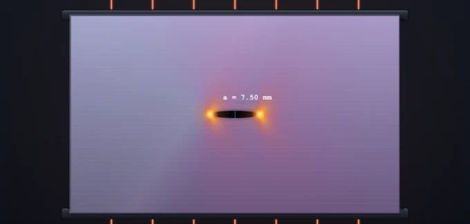

Crack Propagation & Critical Crack Length
3D Model — Crack Propagation & Critical Crack Length
Interactive crack propagation simulator: stress intensity factor K, critical crack length, Paris law fatigue growth, plastic zone, K_IC database for 12 materials.
Drag to rotate · Scroll to zoom
Linear Elastic Fracture Mechanics — KI, ac, Paris law & plastic zone for 4 cracked geometries
KI
—
KIC (material)
—
Geometry factor Y
—
Critical ac
—
rp (plane stress)
—
Status
SAFE
a/W 0.00
σ/σy 0.00
📖 Learning panels
Σ Live equations — values substituted from current state
🧠 What-if coach — suggestions for safe design
📈 a vs N sparkline — crack growth history (Paris law)
Run the Paris-law animation to populate this chart.
User Guide — Crack Propagation Simulator
1 Overview
The Crack Propagation & Critical Crack Length Simulator is an interactive Linear Elastic Fracture Mechanics (LEFM) lab. It computes the Mode I stress intensity factor KI = Y · σ · √(πa), finds the critical crack length ac at which fast brittle fracture occurs, and animates fatigue crack growth using the Paris law da/dN = C(ΔK)m.
It targets Bachelor-level mechanical and materials-science students: design of safety-critical components, fracture toughness selection, fatigue life prediction, and damage-tolerance analysis.
2 Setting Up the Load Case
The simulator opens in Simulate → Static mode with a Centre Crack in 4340 steel. The top canvas shows the cracked plate with a colour-mapped σyy stress field (with the r−½ singularity around the crack tip), the crack itself, and the Irwin plastic zone. The chart below plots KI vs crack length a with the KIC horizontal line and the critical crack length marker.
Pick a geometry, pick a material (12 presets covering ductile metals, high-strength alloys, ceramics, and polymers), then drag the a, σ, and W sliders. The status badge turns SAFE → CAUTION → FRACTURE as KI approaches and exceeds KIC.
3 Simulate Mode — Static analysis
In Static sub-tab, the simulator evaluates KI at the current crack length and compares it to KIC. The 4 geometries available:
- Centre Crack — through-thickness 2a centre crack in a plate of width W. Y = sec(πa/W)½ (Feddersen secant).
- Single Edge Crack — edge-through crack of length a in a plate of width W under tension. Y polynomial in a/W (Tada et al.).
- Double Edge Crack — symmetric cracks of length a at both edges.
- Semi-elliptical Surface Crack — a/c = 0.4, deepest-point KI (Newman–Raju approximation).
4 Simulate Mode — Paris Law (Fatigue)
Switch the Analysis sub-tab to Paris Law. Now the simulator integrates da/dN = C(ΔK)m starting from an initial crack a0 until a reaches the critical crack length ac. Adjust Δσ (cyclic stress range) and stress ratio R. Press Play to animate the crack growing visibly in the canvas; the sparkline in the Learning Panel logs a vs N.
Material constants C and m are taken from the selected material’s database entry where available, otherwise generic ferritic-steel values are used and flagged.
5 Explore Mode
Five categories: Fundamentals (Griffith, LEFM, K-field), Modes I/II/III (opening, sliding, tearing), Materials & KIC (database with toughness ranges), Fatigue (Paris) (three regions of da/dN−ΔK, threshold ΔKth), and Design & Standards (damage tolerance, ASTM E399, E647).
6 Practice & Quiz
Practice generates random LEFM problems — compute KI, solve for ac, find cycles to failure from Paris law. Submit a numeric answer; click Show Solution for a full worked walk-through.
Quiz is a 5-question, mixed-format session (multiple choice + numeric) with star rating at the end.
7 Units, Export & Keyboard
The SI / Imperial toggle switches displayed units: stress (MPa↔ksi), length (mm↔in), toughness (MPa·√m ↔ ksi·√in). Internal computation always uses SI.
Right-click the canvas for Export PNG / Copy KI / Reset. The action bar exposes CSV export of the K vs a curve and PNG export with watermark. Keyboard: arrow keys nudge a focused slider; Escape closes the calculation modal.
8 Formulas & assumptions used internally
Geometry factors Y(a/W) are taken from standard handbook fits:
- Centre crack — Feddersen secant, Y = √(sec(π·a/W)); a is the half-crack length, valid for 2a/W < 1.
- Single edge — Tada/Paris/Irwin universal trigonometric form (accurate to 0.5% for all a/W).
- Double edge — Anderson Table 2.4 polynomial, F(α) = 1.12 + 0.43α − 4.79α² + 15.46α³ with α = a/W (W = full plate width).
- Surface (semi-elliptical, a/c = 0.4) — Newman-Raju with M₁ = 1.094, Q = 1.316 and a simple finite-width correction; assumes plate thickness ≈ width.
Fatigue (Paris) physics: Walker effective ΔK with γ = 0.5, ΔKeff = ΔK/√(1−R) for R ≥ 0; for R < 0, the compressive half is suppressed (crack closure) and ΔKeff = ΔK. Threshold scales as ΔKth(R) = ΔKth0·√(1−R).
Fast-fracture criterion: Kmax = σmax·Y·√(πa) ≥ KIC, with σmax = Δσ/(1−R). The critical crack length ac is solved iteratively (bisection) because Y depends on a/W.
Out of scope (not modelled): Mode II/III mixed loading; stress-corrosion cracking; hold-time / dwell effects; plasticity-induced closure beyond simple Walker; environmental effects; residual stress; small-crack regime (a < ~10 grain diameters); FOREMAN ramp-up to KIC; load-sequence effects (overload retardation).
9 Tips & Best Practices
- LEFM small-scale yielding requirement: the plastic zone rp must be small compared to a and the remaining ligament (W−a). The simulator warns when this assumption is violated.
- Plane stress vs plane strain: thin plates yield in plane stress (larger rp); thick sections are in plane strain (smaller rp, lower apparent toughness). KIC in the database is the plane-strain value.
- Damage tolerance design: always assume an initial flaw of detectable size (often 0.5–1 mm by NDT) and ensure cycle life exceeds inspection interval × safety factor.
- Brittle materials (ceramics, glass) have very low KIC (< 5 MPa·√m) — even hairline cracks are critical.
- Threshold ΔKth — below this value, fatigue cracks do not grow. Useful for infinite-life design.
Understanding Crack Propagation and Critical Crack Length

The stress intensity factor KI = Y·σ·√(πa) characterises the magnitude of the stress field around a crack tip. Fast brittle fracture occurs when KI reaches the material’s fracture toughness KIC. The critical crack length is ac = (1/π)·(KIC/(Y·σ))2.
Fracture Toughness KIC for Common Engineering Materials
| Material | σy (MPa) | KIC (MPa·√m) | Class |
|---|---|---|---|
| 4340 alloy steel (tempered) | 1480 | 50–75 | High-strength steel |
| AISI 1020 mild steel | 350 | 140 | Ductile steel |
| Maraging 250 steel | 1700 | 120 | Ultra-high strength |
| 2024-T351 aluminium | 325 | 26 | Aerospace Al |
| 7075-T651 aluminium | 505 | 24 | Aerospace Al |
| Ti-6Al-4V titanium | 910 | 55 | Aerospace Ti |
| Al2O3 alumina | — | 3–5 | Ceramic |
| Soda-lime glass | — | 0.7 | Brittle |
| PMMA (acrylic) | 70 | 1.0 | Polymer |
| Polycarbonate | 62 | 2.2 | Polymer |
From Griffith to LEFM: A Short History
Modern fracture mechanics began with A. A. Griffith’s 1921 paper on the rupture of glass, which derived a critical-stress criterion from energy balance — the energy released by crack extension must equal the energy needed to create new surfaces. George Irwin extended Griffith’s work in 1957 by introducing the stress intensity factor K and the strain-energy-release rate G, making the framework usable for engineering metals. Irwin also proposed the small-scale-yielding correction and the plastic-zone estimate rp = (1/(2π))·(K/σy)2. Today the framework is codified in ASTM E399 (plane-strain KIC) and E647 (fatigue crack growth da/dN−ΔK). This simulator’s polynomials for Y(a/W) come from the standard references Tada, Paris & Irwin (1985) and Murakami’s Stress Intensity Factors Handbook.
Paris Law and Fatigue Crack Growth
Under cyclic loading, even cracks shorter than ac grow slowly with each cycle. The crack-growth rate da/dN versus the stress-intensity range ΔK = Kmax − Kmin follows a characteristic three-region curve. Region I shows a threshold ΔKth below which cracks do not grow. Region II follows the power-law da/dN = C(ΔK)m (Paris–Erdogan, 1963), with m typically 2–4 for metals. Region III ramps up as Kmax approaches KIC and the crack accelerates to fast fracture. Integrating Paris law from an assumed initial flaw to ac yields fatigue life Nf, which is the basis of damage-tolerance design used in the aerospace, nuclear, and offshore industries.
Who Uses This Simulator?
This crack-propagation visualiser is designed for undergraduate mechanical and materials science engineering students studying fracture mechanics, fatigue, and damage tolerance. It is also useful for design engineers selecting materials for safety-critical components (pressure vessels, aircraft skins, pipelines, turbine blades). The Practice and Quiz modes reinforce LEFM calculations needed for FE/PE exams and aerospace certification work.
Explore Related Simulators
If you found this crack propagation simulator helpful, explore our Stress Concentration Factor (Kt) Simulator, Fatigue Testing Virtual Lab, Fatigue Life (S-N & Goodman) Simulator, Stress-Strain Diagram Trainer, and Mohr’s Circle Stress Analysis for more hands-on practice.